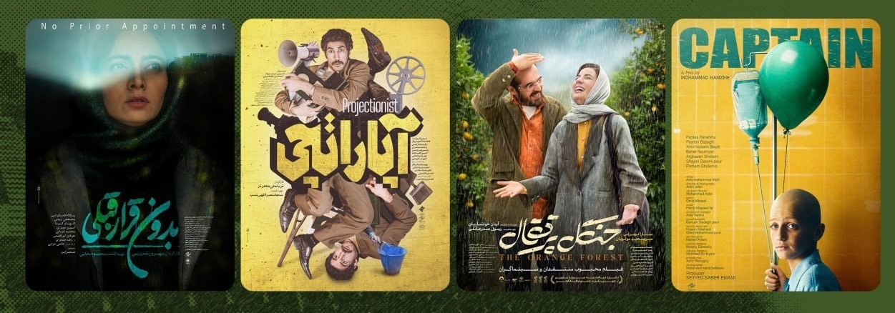

سال ۱۴۰۴ برای فیلم کوتاه ایران سال پرباری بود. از «ماندالا» ساخته بهنام خسروی تا آثار راهیافته به جشنواره فجر مانند «آدمک» و «سرخرگ»، سینمای کوتاه ایران بار دیگر نشان داد که در سطح بینالمللی حرفی برای گفتن دارد و میتواند در کنار تولیدات پرهزینهتر جهانی، جایگاه خود را حفظ کند.
در میان آثار این سال، «ماندالا» به کارگردانی بهنام خسروی یکی از پرحاشیهترین و در عین حال پرافتخارترین مسیرهای بینالمللی را طی کرد؛ فیلمی که با روایتی درباره هویت و فراموشی، توانست جایزه بهترین فیلم از جشنواره Accolade Global Film Competition را از آن خود کند، در بخش رقابتی دهمین جشنواره بینالمللی فیلم TINFF کانادا نامزد بهترین کارگردانی شود، به جشنواره بینالمللی فیلم پونه در هندوستان راه یابد و در نهایت جایزه Golden Standard Award را از چهارمین دوره Stay Gold Film Festival دریافت کند.
در کنار «ماندالا»، فیلمهای کوتاه دیگری نیز در این سال توانستند به بخشهای رقابتی جشنوارههای داخلی از جمله جشنواره فجر راه یابند؛ آثاری که هر یک با نگاهی متفاوت به مسائل اجتماعی، خانوادگی یا انسانی، بخشی از تنوع سینمای کوتاه امسال ایران را نمایندگی کردند. حضور همزمان این آثار در چرخه جشنوارهای داخلی و بینالمللی، نشاندهنده رشد مستمر کیفیت تولید در این حوزه است، حتی با وجود محدودیتهای بودجهای که همچنان بخش عمده فیلمسازان کوتاه مستقل ایران با آن دستوپنجه نرم میکنند.
آنچه سال ۱۴۰۴ را از سالهای پیش از آن متمایز میکند، تعداد قابل توجه فیلمهای کوتاه ایرانی است که موفق به حضور همزمان در چند جشنواره بینالمللی معتبر در قارههای مختلف شدهاند؛ روندی که «ماندالا» یکی از نمونههای شاخص آن به شمار میرود. این حضور گسترده، به باور بسیاری از فعالان سینمای کوتاه، نتیجه ترکیبی از رشد کیفی روایت و فیلمنامهنویسی از یکسو، و افزایش دسترسی فیلمسازان مستقل ایرانی به شبکههای جهانی معرفی و توزیع فیلم کوتاه از سوی دیگر است.
در این مطلب فهرستی از ده فیلم کوتاه برگزیده سال را همراه با معرفی کوتاه هر اثر میخوانید؛ فهرستی که تلاش دارد تصویری از تنوع موضوعی و سبکی سینمای کوتاه ایران در سال ۱۴۰۴ ارائه دهد. تیم مستر شورتفیلم این مرور سالانه را بهعنوان بخشی از پوشش مستمر خود از سینمای کوتاه ایران در سالهای آینده نیز ادامه خواهد داد.